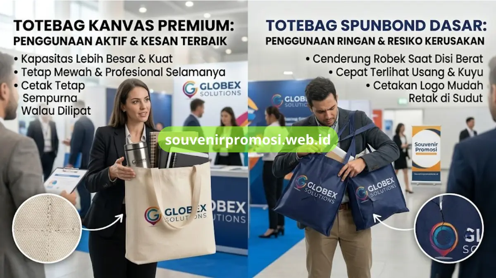

Poin Penting
- Totebag kanvas menggunakan serat tebal, sedangkan spunbond berbahan non-woven yang tipis.
- Kanvas lebih kuat menahan beban dan gesekan dibandingkan spunbond yang rentan sobek di jahitan.
- Tekstur kanvas memberi kesan premium, sementara spunbond lebih tipis dan mengkilap.
- Hasil cetak pada kanvas lebih tajam, merata, dan tahan lama berkat pori-pori kain yang baik.
- Masa pakai totebag kanvas lebih panjang, memperluas eksposur brand korporat tanpa biaya promosi tambahan.
Daftar Isi
- Pendahuluan
- Karakteristik Bahan Totebag Kanvas Dibandingkan Spunbond
- Ketahanan Beban dan Struktur Serat
- Nilai Estetika dan Kesan pada Penerima Souvenir
- Perbandingan Hasil Cetak Logo pada Kanvas dan Spunbond
- Daya Rekat Sablon dan DTF pada Serat Kanvas
- Ketahanan Cetak terhadap Pencucian dan Lipatan
- Masa Pakai dan Nilai Investasi Souvenir Korporat
- Tingkatkan Kualitas Souvenir Korporat
- FAQ
Pendahuluan
Totebag kanvas dan totebag spunbond adalah dua bahan yang paling umum dipakai untuk souvenir promosi korporat, namun keduanya memiliki karakteristik berbeda dari sisi ketebalan, daya tahan, dan hasil cetak. Totebag kanvas menggunakan serat kain tebal yang lebih kuat menahan beban, sementara spunbond adalah bahan non-woven tipis yang lebih ringan namun cepat menunjukkan tanda pemakaian. Souvenir Promosi menghadirkan totebag kanvas dengan berbagai pilihan ketebalan dan teknik cetak sebagai alternatif souvenir korporat yang lebih tahan lama.
Karakteristik Bahan Totebag Kanvas Dibandingkan Spunbond
Kanvas merupakan kain tenun dari serat katun atau campuran katun-polyester dengan struktur rapat dan tebal, sedangkan spunbond adalah bahan non-woven berbasis polypropylene yang diproses dengan tekanan panas. Struktur serat kanvas yang rapat membuatnya lebih tahan terhadap gesekan dan robekan dibandingkan lembaran spunbond yang cenderung tipis dan mudah sobek pada sudut jahitan.
Ketahanan Beban dan Struktur Serat
Totebag kanvas mampu menahan beban lebih berat seperti dokumen, tumbler, atau perangkat elektronik ringan karena serat tenunnya saling mengunci kuat. Spunbond, di sisi lain, lebih rentan robek pada bagian pegangan tali saat menahan beban serupa dalam pemakaian berulang.
Nilai Estetika dan Kesan pada Penerima Souvenir
Tekstur kanvas yang tebal memberi kesan premium saat dipegang, berbeda dengan spunbond yang bertekstur tipis dan mengkilap seperti kain non-woven pada umumnya. Souvenir dengan bahan kanvas dari Souvenir Promosi dirancang untuk memberi kesan bahwa perusahaan memperhatikan kualitas produk yang dibagikan kepada klien maupun karyawan.
Perbandingan Hasil Cetak Logo pada Kanvas dan Spunbond
Permukaan kanvas menyerap tinta sablon dan lem DTF lebih merata dibandingkan permukaan spunbond yang licin, sehingga hasil cetak logo pada kanvas cenderung lebih tajam dan tahan lama. Pada spunbond, lapisan cetak lebih mudah terkelupas terutama pada area lipatan tas setelah beberapa kali pemakaian.

Daya Rekat Sablon dan DTF pada Serat Kanvas
Serat kanvas yang berpori memungkinkan tinta sablon rubber dan lapisan DTF menempel lebih dalam ke permukaan kain, sehingga warna cetak tetap solid meski tas dilipat berulang kali. Souvenir Promosi menggunakan kanvas dengan kerapatan serat yang mendukung karakteristik ini pada seluruh varian totebag custom.
Ketahanan Cetak terhadap Pencucian dan Lipatan
Totebag kanvas dari Souvenir Promosi dirancang agar hasil cetak logo tetap terjaga meski tas dicuci atau dilipat dalam penyimpanan jangka panjang, berbeda dengan spunbond yang lapisan cetaknya lebih rentan retak pada kondisi serupa.
Masa Pakai dan Nilai Investasi Souvenir Korporat
Totebag kanvas memiliki masa pakai yang jauh lebih panjang dibanding spunbond karena struktur seratnya tidak mudah rapuh meski terkena paparan sinar matahari atau kelembapan. Souvenir dengan masa pakai lebih panjang berarti logo perusahaan tetap terlihat oleh penerima souvenir dalam jangka waktu lebih lama, memperluas eksposur brand tanpa biaya promosi tambahan.
Tingkatkan Kualitas Souvenir Korporat dengan Totebag Kanvas dari Souvenir Promosi
Souvenir Promosi menyediakan totebag kanvas custom dengan spesifikasi ketebalan dan teknik cetak yang dirancang untuk penggunaan jangka panjang sebagai souvenir korporat. Kunjungi souvenirpromosi.web.id untuk melihat katalog lengkap totebag kanvas dan mendapatkan penawaran harga produksi grosir dibandingkan bahan spunbond konvensional.
Totebag kanvas menawarkan struktur serat yang lebih kuat, hasil cetak logo yang lebih tajam, dan masa pakai lebih panjang dibandingkan totebag spunbond untuk kebutuhan souvenir korporat. Katalog totebag kanvas custom dengan berbagai teknik cetak tersedia di souvenirpromosi.web.id untuk pemesanan grosir perusahaan.